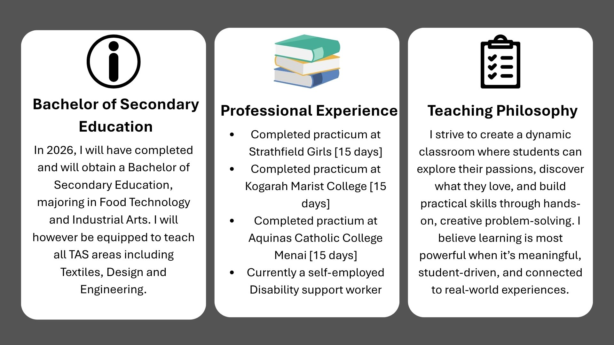

About Me
Hi, my name is Lauren — a TAS teacher-in-training with a love for all things Food Tech, Industrial Arts, and hands-on learning. I’m currently studying at the Australian Catholic University and spend my days designing lessons and learning new skills, that will allow students to create, problem-solve, and explore their ideas.
Outside of the classroom, I run a disability support business, working with people of all abilities to help them grow their skills and confidence. Whether it’s in the kitchen, the workshop, or the community, I’m all about creating equal opportunities for people to learn, connect, and achieve things they once thought impossible.
Interests
When I’m not teaching or supporting others, you can find me:
- Cooking and experimenting with new recipes
- Crafting handmade jewellery and art
- Running or hiking in nature
- Spending time outdoors, especially running and exploring new trails
- Enjoying quality time with family and friends
- Caring for and learning from life on our family farm with a variety of animals
- Being around animals — from farm life to family pets 